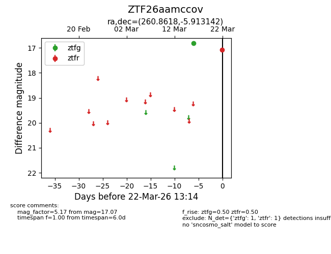
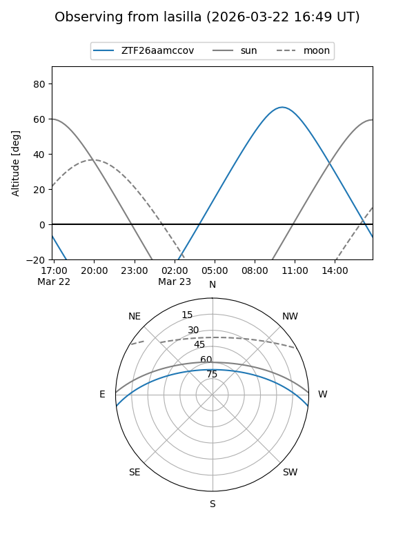
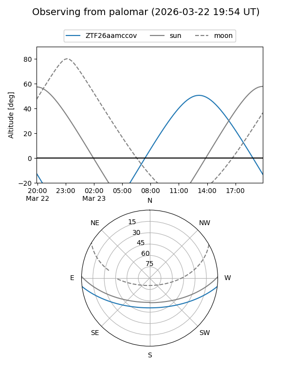

ZTF26aamccov
Target ZTF26aamccov at 2026-03-22 13:16
Aliases and brokers:
FINK: link
Lasair: link
ALeRCE: link
alt names
ZTF26aamccov (ztf,fink_ztf)
Coordinates:
equatorial (ra, dec) = 260.8618,-5.91314
equatorial (HMS+DMS) = 17:23:26.84,-05:54:47.31
galactic (l, b) = (17.0974,+16.53565)
Flags:
Photometry:
last ztfg=16.81, ztfr=17.07
1 ztfg, 1 ztfr detections
Lightcurve

Visibility


Additional plots